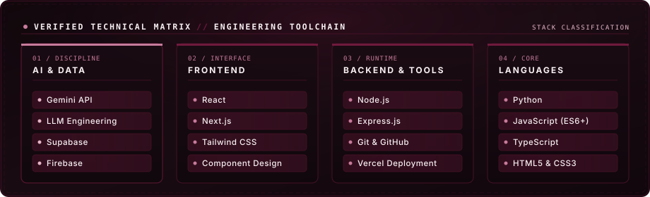

01 // PROFILE & ARCHITECTURE
"Engineering intelligent systems by pairing generative AI capabilities with responsive, production-ready web interfaces."
I am an Aspiring AI Engineer and Full-Stack Developer currently pursuing my B.Tech in Computer Science and Engineering at NIAT / NextWave Institute of Advanced Technologies.
My core methodology is rooted in pragmatic engineering: learning by building, testing real-world edge cases, and transforming emerging AI models into intuitive, dependable software applications. Rather than relying on purely theoretical exercises, I focus on integrating LLMs, multimodal vision, speech pipelines, and full-stack web architectures into practical solutions.
- Current Discipline: AI Engineering & Autonomous Agent Workflows
- Undergraduate Studies: B.Tech Computer Science & Engineering (NIAT / NextWave)
- Base of Operations: Hyderabad, India
- Core Ethos: Build rigorously, iterate continuously, and ground every experiment in solid fundamentals.
02 // CURRENT ENGINEERING FOCUS
┌─────────────────────────────────────────────────────────────────────────────┐ │ ACTIVE EXPLORATION & APPLIED RESEARCH VECTORS │ └─────────────────────────────────────────────────────────────────────────────┘
- Generative AI & LLM Engineering: Developing applications powered by the Gemini API and contemporary large language models. Investigating structured prompt engineering, system framing, context window optimization, and multimodal reasoning (text, audio, vision).
- Intelligent AI Agents & Autonomous Workflows: Designing conversational agent architectures and task orchestration loops. Exploring function calling, memory persistence, tool execution, and voice-enabled interactions (e.g., Nova Voice Assistant).
- Modern Full-Stack Web Development: Architecting high-performance client experiences with React, Next.js, and Tailwind CSS, coupled with clean, scalable backend endpoints in Node.js, Express, and Python.
- Practical Software Engineering Fundamentals: Writing clean, modular code, enforcing version control discipline with Git & GitHub, managing state with Supabase and Firebase, and deploying continuous delivery builds on Vercel.
03 // TECHNICAL MATRIX

| Vector | Core Technologies | Focus & Application |
|---|---|---|
| AI & Intelligent Data | Gemini API LLM Engineering Supabase Firebase |
Context injection, multimodal prompting, agent logic, and persistent vector/relational data. |
| Frontend Engineering | React Next.js Tailwind CSS HTML5 CSS3 |
Modern component architectures, responsive user interfaces, and fast edge-rendered web applications. |
| Backend & Environments | Node.js Express.js Git GitHub Vercel |
RESTful API services, version control lifecycle, continuous deployment, and runtime hosting. |
| Core Languages | Python JavaScript (ES6+) TypeScript |
Scripting, AI/ML glue code, speech synthesis automation, and type-safe web development. |
04 // FEATURED ENGINEERING PROJECTS
★ FLAGSHIP PROJECT | 01. V1 – AI Voice Assistant (Nova)Domain: Voice-First Conversational AI & Real-Time Agent Intelligence An intelligent, voice-first artificial intelligence assistant engineered for low-latency natural conversation and desktop task execution. Nova integrates real-time speech recognition, deterministic wake-phrase detection, and generative language modeling with the Gemini API to classify user intent, plan multi-step actions, and stream spoken responses with instant barge-in interruption handling. Verified Tech Stack: Key Architecture: Continuous Speech Recognition Engine • Task & Intent Agent Orchestrator • Sentence-Aligned Response Chunker • Modular TTS Provider Factory • Real-Time Barge-In Invalidation |
02. MediLens AIDomain: AI-Powered Healthcare Assistance & Vision Intelligence An assistive healthcare intelligence prototype built to analyze medical prescriptions, lab reports, and medicine packaging. Employs multimodal vision via the Gemini Vision API alongside a strict OCR-guard pipeline to transcribe and structure clinical documents into clear summaries without hallucinating ambiguous medical data. Verified Tech Stack: |
03. CineStreamDomain: Media Discovery Application & Content Navigation A Netflix-inspired media discovery application designed for rapid content browsing and video previews. Features an editorial dark-mode interface, responsive categorized movie exploration, dynamic search filtering, and seamless media catalog integrations. Verified Tech Stack: |
05 // DEVELOPMENT CADENCE & ACTIVITY

06 // METRICS & REPOSITORY TELEMETRY
|
|
|
07 // NETWORK & COLLABORATION
I am always keen to collaborate on generative AI experiments, open-source projects, and full-stack web applications. Feel free to reach out or connect across my verified channels:
